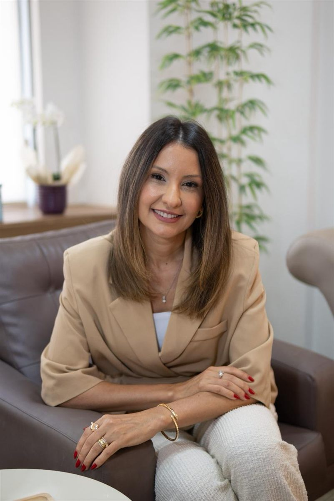

Sou a Amanda Hipólito, psicóloga há mais de 15 anos — ajudo pessoas a se compreenderem melhor e a viverem com mais leveza e autonomia.
Atendimento a partir dos 16 anos · Todo o Brasil e exterior
Talvez você reconheça algum destes momentos na sua rotina — e ainda não tenha encontrado espaço para colocá-los em palavras.
Você não precisa ter todas as respostas agora.

No processo terapêutico você tem a oportunidade de se conhecer mais e desenvolver atitudes que te levem a ficar mais em paz consigo mesmo — da causa aos sintomas.
Trabalhamos os gatilhos e a causa do desconforto, para que você possa lidar com as situações de forma mais ativa.
Compreender melhor a si mesmo contribui para laços emocionais mais saudáveis e menos dependentes.
À medida que a dor e a tristeza ganham palavras, é possível encontrar uma forma melhor de dar vazão ao que falta.
Elaborar experiências que ainda doem para sair do ciclo de repetição e seguir com mais liberdade.
Suporte para viver esse novo papel com mais sentido e menos idealizações, que podem ser perturbadoras.
Caminhos alternativos aos atos compulsivos, mais saudáveis e possíveis para você, construídos no seu tempo.
As sessões online têm a mesma qualidade das presenciais. Por videochamada, com sigilo e segurança, para todo o Brasil e exterior — com duração aproximada de 50 minutos.
Sessões no ambiente que você escolher, sem deslocamento.
Atendimentos também fora do horário comercial.
Ideal para quem mora longe ou fora do Brasil.
Toda a confidencialidade ética do consultório físico.
Um ambiente pensado para acolher, com privacidade e conforto do início ao fim da sessão.
Consultório em Goiânia/GO · Atendimento presencial e online
Cada processo terapêutico é único. Estes são os passos gerais do nosso caminho juntas.
Você me chama no WhatsApp, tira suas dúvidas e entende como funciona o atendimento — sem compromisso.
Um encontro para eu entender sua história e o que te trouxe até a terapia neste momento.
Sessões semanais, presenciais ou online, de aproximadamente 50 minutos, no seu tempo.
Ao longo do caminho, você desenvolve mais clareza, leveza e liberdade nas suas escolhas.
“Dra. Amanda é extremamente atenciosa, me deixou super à vontade desde a primeira consulta. O tratamento está sendo importantíssimo na minha vida, para minha recuperação mental e até física.”
“Profissional empática, que ouve com atenção. Tem grande habilidade em interpretar o que o paciente leva na sessão. Clara e cuidadosa nas palavras. Estou amando a terapia com a Amanda!”
“Gostei muito da primeira consulta, a Dra. é muito atenciosa.”
“Fui atendida pela Amanda num momento muito delicado, a volta ao trabalho após meu primeiro filho. Já no primeiro contato ela se mostrou acolhedora. Indico de olhos fechados.”
Sou psicóloga clínica atuante desde 2010, ano em que abri meu consultório, ainda recém-formada, impelida pelo desejo de ajudar pessoas em seus processos de sofrimento psíquico. Hoje, mais de 15 anos depois, esse desejo ainda move a minha atuação profissional.
Meu trabalho consiste em acolher, escutar e caminhar ao lado de quem chega até mim — não só para resolver os conflitos que motivaram a busca pela terapia, mas para viver com mais leveza e autonomia diante das próprias escolhas.
Atualmente atendo adolescentes (a partir de 16 anos) e adultos, de forma online e presencial, em consultório localizado em Goiânia/GO.
Vamos conversar sobre o que te trouxe até aqui →Não. Atendo online para todo o Brasil e também brasileiros no exterior, além do presencial em consultório em Goiânia/GO.
É um momento de acolhimento, no qual busco entender o que te trouxe até a terapia e explico como será nosso processo daqui em diante.
Cada processo terapêutico é único. Conversamos sobre isso ao longo do acompanhamento, sem prazos fixos ou fórmulas prontas.
Sim, integralmente — tanto online quanto presencial, seguindo o Código de Ética Profissional do Psicólogo (CRP 09/6834).
Posso emitir recibo para que você solicite reembolso, de acordo com as regras do seu convênio.
Atendo adolescentes a partir de 16 anos e adultos, de forma online ou presencial em Goiânia.
Dê o primeiro passo: mande uma mensagem e vamos entender juntas como a terapia pode te ajudar.
Agendar conversa no WhatsAppDar esse primeiro passo já é parte da solução. Vamos conversar sobre o que te trouxe até aqui.